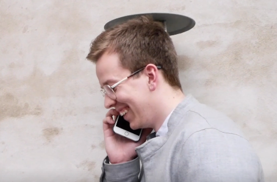

Til temaet om content, skulle vi redesigne en website i grupper. Vores gruppe valgte en virksomhed, som en mand for et gruppemedlem arbejdede for. I dette afsnit vil jeg afvige lidt fra kodning og tage fat i det mere kommunikationsmæssige perspektiv af semestreret. Vi lærte her, hvordan man med kameravinkler, farver, musik og perspektivering, kunne få sit budskab frem.

Som man kan læse i vores koncept og se på billedet, var vores budskab, at få kviklånsvirksomheden, Minifinans, til at fremstå mere positive og empatiske. Dette gjorde vi ved at skrue op for de lyse farver, og lade spørgsmålene til interviewet positivt. Musikken hertil spiller også en kæmpe rolle, da det et elektronisk, upbeat stykke, som giver en ungdommelig energi og troværdighed. Derudover lagde vi b-rolls ind, som forstærker den troværdige og positive stemning, som skal indkapsulere virksomheden.